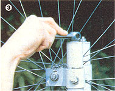

[3] The upper wheel can be tilted on its horizontal axis by adjusting the threaded rods that are linked to the upper collars. The degree of tilt governs blade tracking, and band tension is controlled by the amount of collar lift.